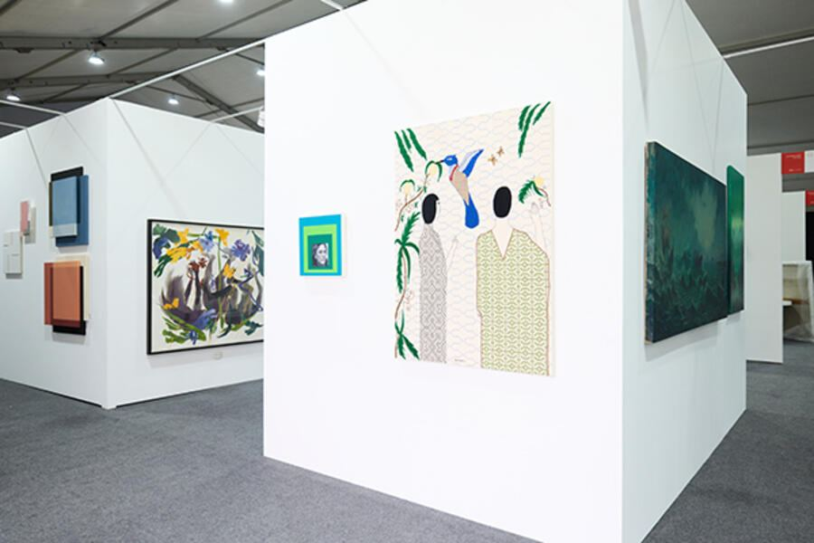

Festivals · Arts
Pinta Lima 2027
- Dates
- –
- Venue
- Casa Prado, Miraflores
- Location
- Lima, Peru
- Format
- In-person
- Category
- Arts
- Industry
- Contemporary art fair
- Organiser
- Pinta
- Official website
- https://es.pinta.art/Lima/Home
About
14th edition; billed as Peru's most anticipated contemporary art fair. Peru dates are local (Peru time, UTC-5 all year, no daylight saving).
Topics: contemporary art, galleries, Latin American art.
No organiser attendance figure found on the official pages checked (24 Nov 2026). Ranked by an estimated size tier 'medium' (about 1,000-10,000 attendees; our judgement from format, venue and scale, not an official number).
Sources
- Official — https://es.pinta.art/Lima/Home